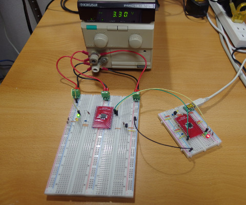
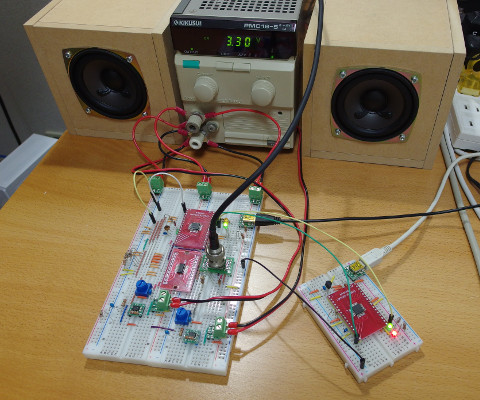
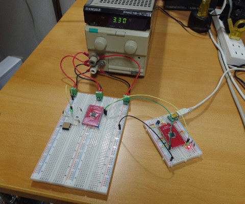
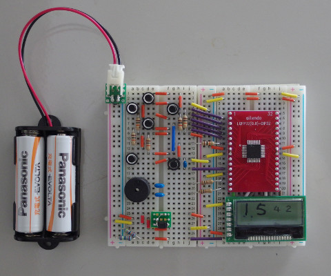

View on GitHub
Libopenstm32l0x2
STM32L0x2 peripheral library
STM32L052K8T Examples
GPIO
miniblink
fancyblink
button
exti
TIM
tim
tim_delay
tim_pwm
tim_encoder
ultrasonic_sensor
LPTIM
lptim
lptim_delay
lptim_encoder
USART
usart
usart_irq
usart_printf
usart_getchar
ADC
potentiometer
DAC
dac
COMP
comp
CRC
crc

1wire_temp
I2C
i2c_rom
i2c_proximity
SPI
spi_rom
spi_barometer
spi_dac
spi_sd
USB
usb_custom
usb_cdcacm
usb_speaker

usb_radio
RTC
rtc_lcd
TSC

touch
IWDG
iwdg
WWDG
wwdg
FW
fw
Miscellaneous
oled_game

kitchen_timer
ethernet_camera
monitor